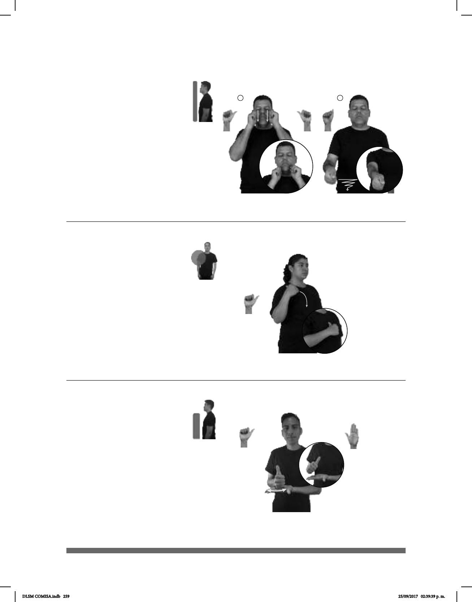

259
1 2
(A-79)
AYER BASTÓN-BLANCO pos-MI #TÍO pro-YO ROMPER
Ayer rompí el bastón blanco de mi tío.
(A-80)
MAÑANA LIVERPOOL HABER DESCUENTO BOLSA-MANO
Mañana habrá descuentos en bolsas de mano en Liverpool.
(A-81)
BOTELLA VERDE
ahí
Dame la botella verde que está sobre la mesa por favor.
Seña: SC: I. SS; II. SM
I. A.4; II. A.5
I. Palmas hacia el centro; II.
Palma hacia la izquierda.
I. De los pómulos a la boca;
II. Del pecho hacia el frente.
I. Recto; II. La mano sigue
una trayectoria ondulada hacia el frente.
Simula el movimietno
del bastón de una persona ciega.
sust. m. Vara alargada con la
que una persona ciega se guía al caminar.
Seña: SM
A.1
Palma hacia la izquierda.
Del hombro al pecho.
El brazo y la mano se
mueven formando un arco.
Simula la acción de
colgarse una bolsa en el hombro.
sust. f. Recipiente de
material resistente para guardar, en viajes
o traslados, ropa u otras cosas y que se
puede llevar a mano o colgado del
hombro.
Seña: SB
MD A.1, MB B-P.2
MD palma oblicua hacia
la izquierda y hacia adentro. MB palma
hacia arriba.
A la altura del pecho. MD
sobre MB.
El antebrazo gira y
cambia la orientación de la palma
repetidamente.
sust. f. Recipiente de
cristal, vidrio, plástico u otro material,
con el cuello estrecho, que sirve para
contener líquidos.
DLSM COMISA.indb 259 25/09/2017 02:39:39 p. m.